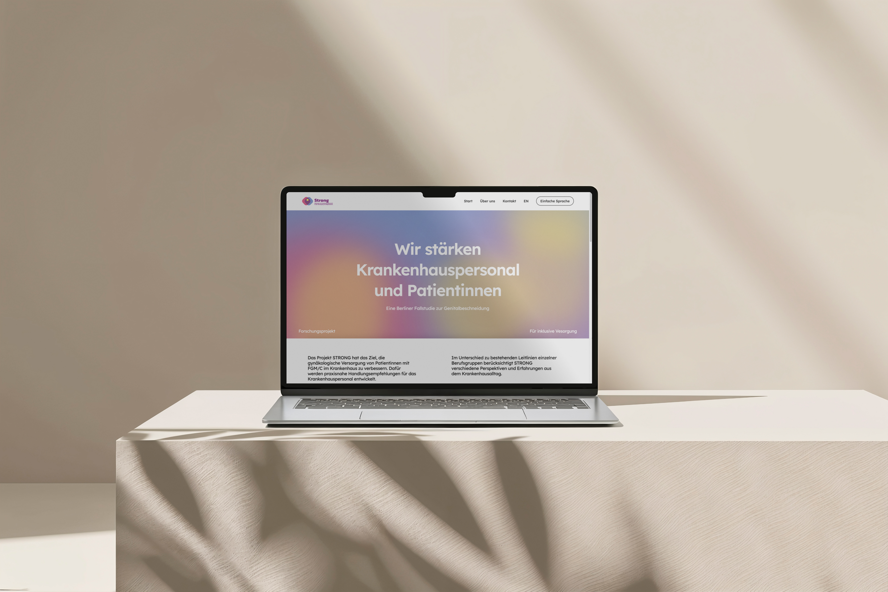
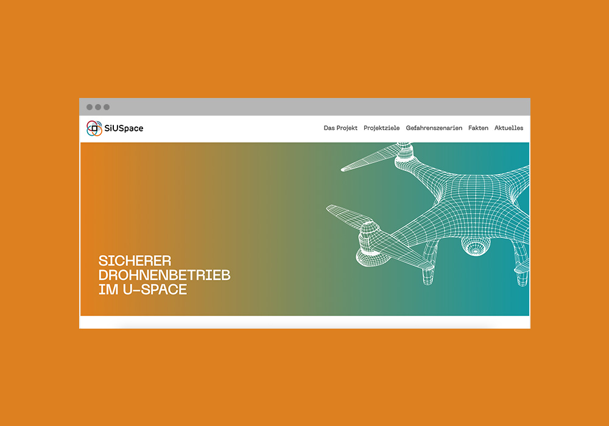
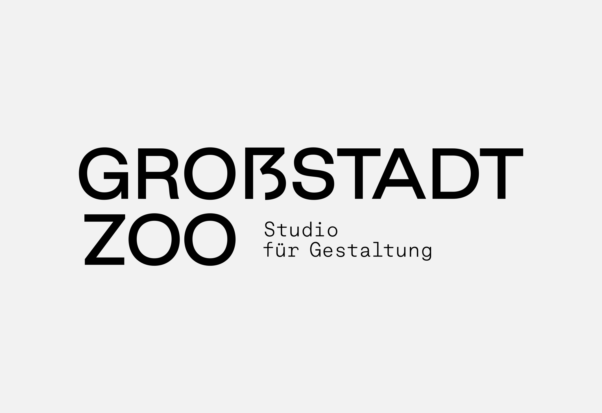
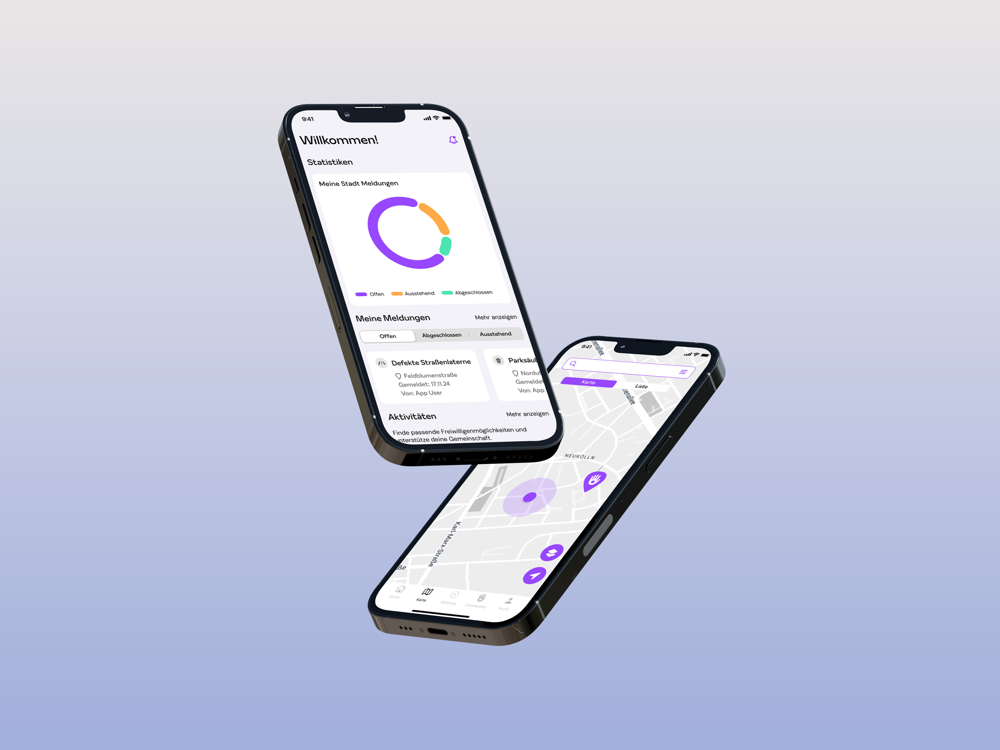
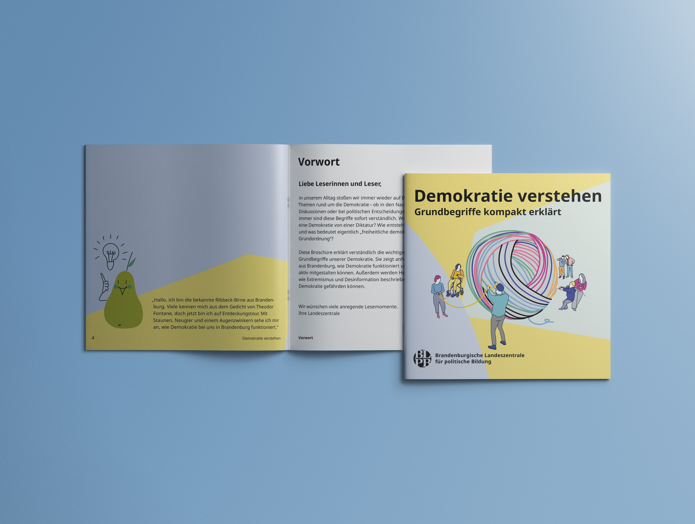
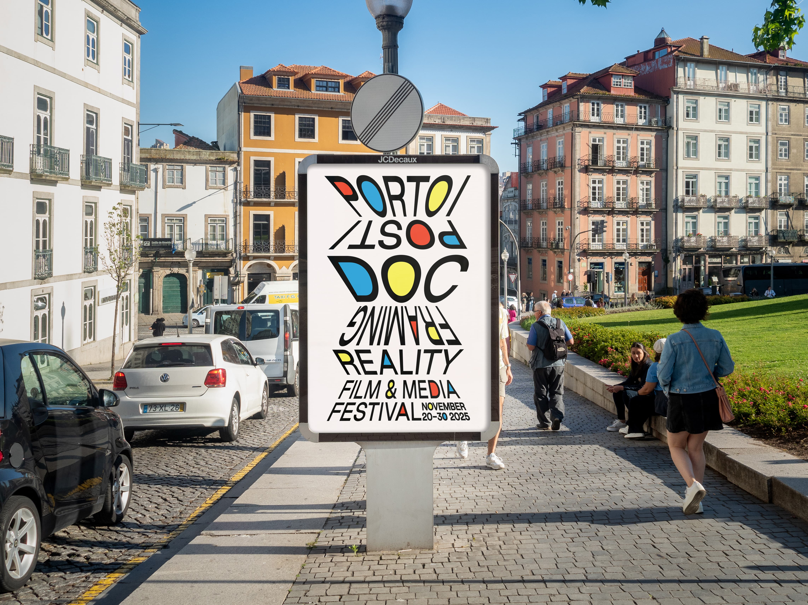
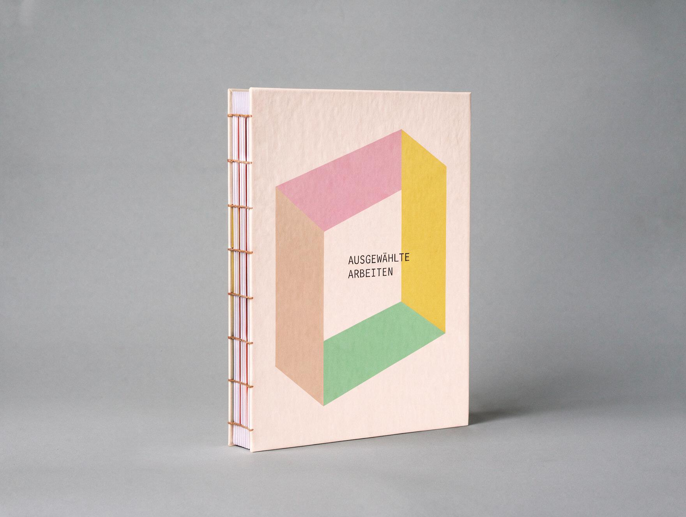

Maria Giannisi
Bio
Contact
EN
|
DE

Strong Project / Web-Design

SiUSpace / Webdesign

Großstadtzoo / Webdesign
tegut / Social Media

Civicomm / UX-UI Design

Understanding Democracy / Illustration

Porto/Post/Doc Poster

Kolloquium / Photograhy / Editorial Design